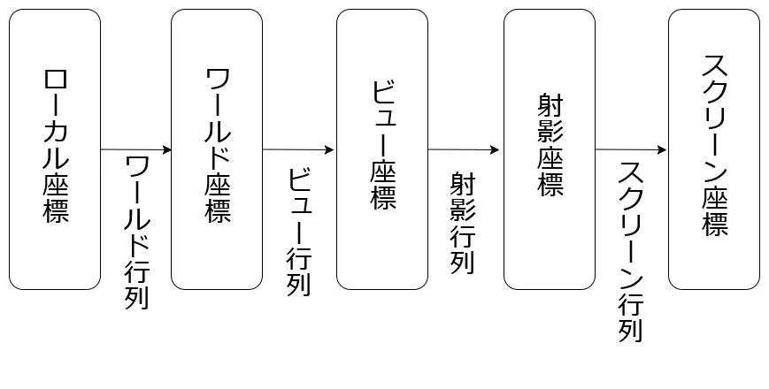
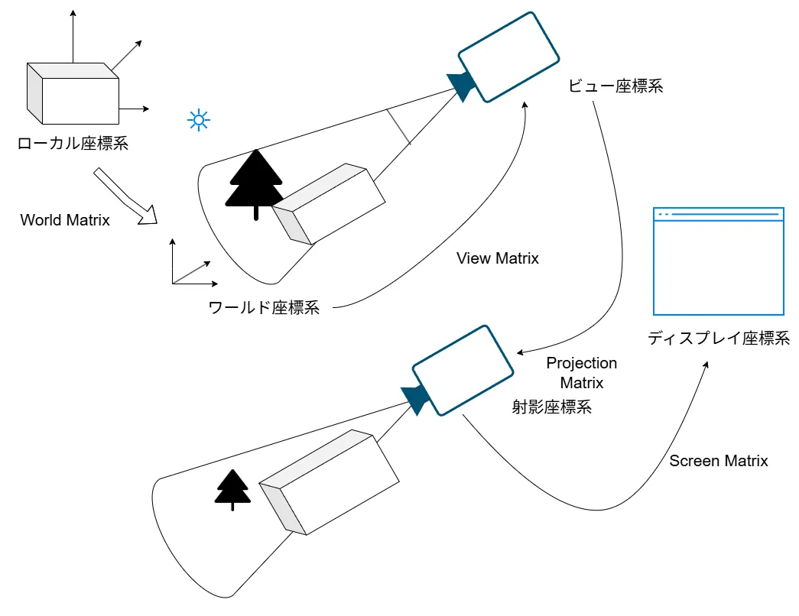
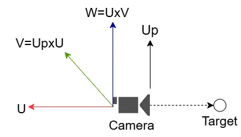
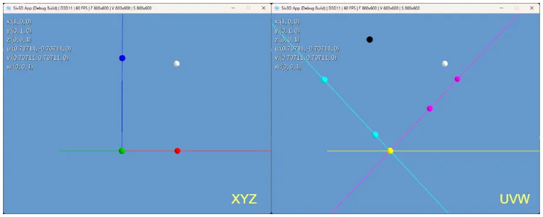
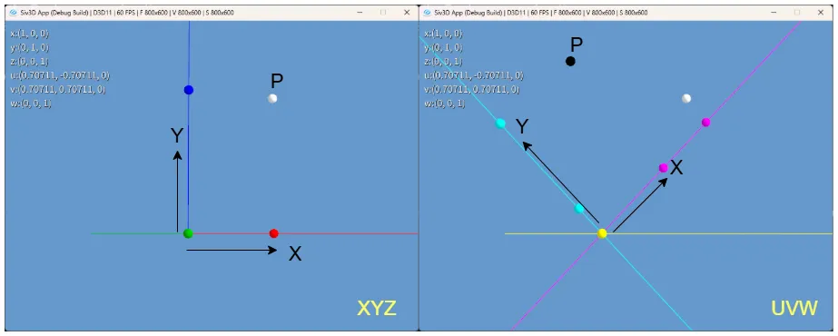
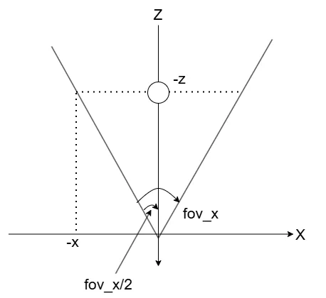
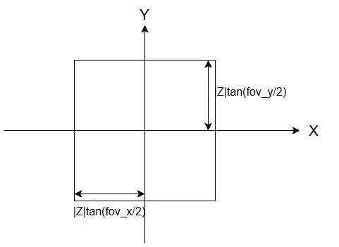
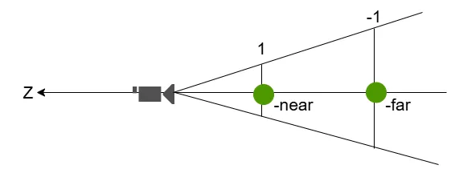
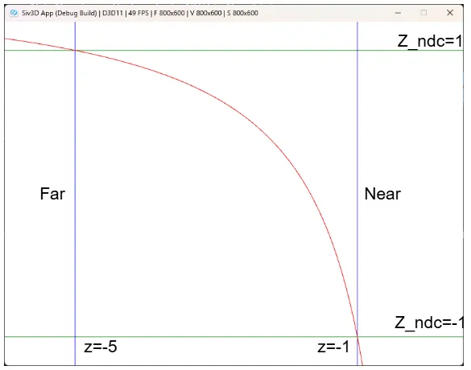
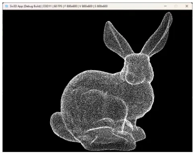

3D座標変換
CGで画面に描画を行うためには3D座標系からディスプレイ内という2D座標系に持っていく必要がある.
今回はこれを実際に見ていくことにする.
3Dの座標変換は以下のような流れで行われる.

座標系は色々あるけど、基本的にはこの形.
まずローカル座標というモデル固有の座標があり、BlenderとかMayaとかでDumpしてくるとまずはこの状態.
これをWorld行列で変換すると、実際にゲームとかで表示するようなMap内の位置となる.
要は実際にキャラをどこに配置とか、背景をここに配置とかはこの変換を加えるのと同じとなる.
そして、次にワールド基準からカメラの位置を基準にしたい.
これを行うために掛けるのがビュー行列で、こうするとカメラ基準のビュー座標になる.
そして、絵画とかが分かりやすいが遠近法というものがある.
遠いものは小さく、近いものは大きく見えるという性質.
これを実際に行うために透視投影を行う.
これは射影行列により行うことができ、そうして射影座標系に移る.
そして、最終的に結果の出力を行うのはディスプレイ.
ディスプレイは2次元なので、2次元にあわしたデータ構造が必要である.
そのため、2Dへの変換を行うためにスクリーン行列というものを掛けて、ディスプレイ上を起点としたスクリーン座標系に移す.
ここまでの流れがざっと必要な3D座標変換となる.
図にしてみると以下のような感じ.

この変換を辿っていくのが今回の主な目標！
参考にするのはこちら,ほかにも色々参考にしつつまとめてみる.
まずはWorld行列.
スケール・移動・回転を行うことで実際の配置を決定していく.
一つずつ見ていこう.
v=(x,y,z,1)と書けるとわかりやすい.
Sv=⎣ ⎡sx0000sy0000sz00001⎦
⎡sx0000sy0000sz00001⎦ ⎤⎣⎡xyz1⎦⎤=⎣⎡sxxsyyszz1⎦⎤
⎤⎣⎡xyz1⎦⎤=⎣⎡sxxsyyszz1⎦⎤
要はsx,sy,szで倍にしてるわけだ.
これも掛け合わせると分かりやすい.
Tv=⎣⎡100001000010txtytz1⎦⎤⎣⎡xyz1⎦⎤=⎣⎡x+txy+tyz+tz1⎦⎤
要はtx,ty,tzで移動量を表してるわけだ.
- 回転
回転が一番大変.
クォータニオンとか色々あるけど、一番シンプルなのはX軸,Y軸,Z軸の回転を行列で表して組み合わせる方式.
まずX軸の回転.
Rx=⎣⎡10000cosθsinθ00−sinθcosθ00001⎦⎤
次にY軸.
Ry=⎣⎡cosθ0−sinθ00100sinθ0cosθ00001⎦⎤
最後にZ軸.
Rz=⎣⎡cosθsinθ00−sinθcosθ0000100001⎦⎤
非常に面倒な形ではあるけども、二次元の回転
[vx′vy′]=[cosθsinθ−sinθcosθ][vxvy]
を使って上手い具合に回転させてるんだ～くらいに思うと頭の中にすっと入ってきやすい.
自分は毎回2D回転を覚えてるので、後はこれをどう当てはめるのかをパズルする感じで3Dを作ってる.
まあそれは置いといて、この3軸があれば以下の回転が表現できる.
Rxyz=RzRyRx
こんな感じで3軸を上手く回転することで表現可能！
勿論ジンバルロックとか問題もあるけど、最初はこれくらいシンプルなものの方が理解しやすい.
さて、とはいえこの行列を表記するのはめんどいので今後は以下のように表記するようにしておく.
R=⎣⎡R11R21R310R12R22R320R13R23R3300001⎦⎤
これでスケール・回転・移動が揃った!!
この行列を組み合わせてWorld行列を作る.
基本的には
WorldMatrix=TRS
という風に構築を行う.
一番大事なのは回転が先で移動が後.
基本的にローカル座標は(0,0,0,1)が中心となりやすい.
これを基準に回転させる方が面倒が少ないからである.
何ともわかりづらい人は(10,5,−10,1)とか適当にずらした後、回転をする計算をやってみるとわかりやすいと思う.
本当に変な場所に行くので.
逆にこの変な場所に行く計算、確かCG検定の上級(だったけ)で昔と変わらなければ頻出なので、受ける人は頭の体操にもなると思う.
スケールは影響を受けにくいのでとにかく1番最初に掛けてしまうのが定番.
これでワールド空間に移せた！
次はビュー座標系を見ていこう.
ビュー座標系は今回はLookAt方式というのを使ってやっていく.
まずビュー座標系ではカメラの位置が原点となる.
つまりカメラがTcam=(tcam:x,tcam:y,tcam:z)という位置にあるとする.
ここを原点(0,0,0)とするためには(tcam:x,tcam:y,tcam:z)だけずらす必要がある.
先ほどやった移動を考えると、これは簡単に表せて、
Tcam=⎣⎡100001000010−tx:cam−ty:cam−tz:cam1⎦⎤
と言えるわけだ.
次が面倒な点、Look-At方式.
まずカメラの位置Pcamとターゲット、つまり見たい位置をPtargetとする.
そして、基準ベクトルとしてupというベクトルを用意.
こうすることで基準の軸を用意する.

カメラの座標系はこんな感じになる.
まずPcamとPtargetを使うことでUを生成する.
これはターゲットの位置と逆向きが正となる.
u=∣Pcam−Ptarget∣Pcam−Ptarget
あくまで方向がわかりゃいいので、正規化をしておく.
次にuと垂直なベクトルを生成する.
基準となるupベクトルがあるので、これを使ってvを生成.ここも正規化を忘れずに.
u=∣up×u∣up×u
ここで2軸ができたなら、後はこの外積を取れば3軸の完成！
ここでは正規化されてるので、正規化しなくても問題ないはず.
w=u×v
この3つの規定座標を使ってEという基底軸による変換行列を作ればOK.
E=⎣⎡vxwxux0vywyuy0vzwzuz00001⎦⎤
3DではXYを基本的にディスプレイ方向とし、深度という形でディスプレイに対して垂直な方向をZとするためuがzの位置になってる.
uが見ている方向なので、そう考えると分かりやすい.
これらを組み合わせたものがビュー行列となる.
ViewMatrix=ETcam
さて、基底についてはちょっと見ておこうか.
この辺は説明としてはこの辺も分かりやすいため、参考にするとよいと思う.
今回のカメラの座標軸というのは、基底の変換が行われることになる.
例えば点(x,y,z)=(0.2,0.3,0.0)という点があったとして、これをそれぞれの軸で見ると次のようになる.

白い点が分かりやすいね.
赤と青の点は射影した形だけど、UVWの方のマゼンタとシアンの射影した点では全く尺度が違う.
要はこれが規定が違うということなわけだ.
因みにX->赤,Y->青,Z->緑であり、U->シアン, V->マゼンタ-,W->イエローである.
ここで上記のEの行列を掛けるというのはUVWをXYZの座標系に戻すような行為ともいえる.
今回Eを適用したものは黒い点で表している.

こんな感じでEを作用させることで元の座標系に戻すことを行う操作となる訳である.
とはいえ、今回のView行列にはTcamがある.
そのため、完全に戻るかと言われると、カメラ基準の位置にずらしてるためNOではある.
あくまでEのみを作用させた際の効果は上記の図のようになると捉えるのが良い.
ここまで来たらやっとProjection行列である.
Projection行列の説明としてはここが個人的には分かりやすくて好き.
図としてはここも分かりやすくて良いかも.
さて、現状ではクリッピング空間まで持ってきた(x,y,z,1)が分かっている状態である.
この時、あるzがあるとき、まずはxに着いてから始めよう.
以下のような図を考える.

あるzが決まると、そこに収まるために必要なxの範囲はFrustumなので直線で決まる.
この時三角形を考えてあげると、以下のような式が成り立つ.
∣x∣∣z∣∣x∣=tan2fovx=∣z∣tan2fovx
この時の式は最大値の場合のxなので、負を付ければ負の側のものとなる.
そのため、xの範囲は以下のように言える.
−∣z∣tan2fovx≤x≤∣z∣tan2fovx
今回、最終的には[−1,1]と範囲に収めたい.
これは正規化View Volumeで色々とこうなるように収まっていた方が嬉しい.
この計算は単純で、∣z∣tan2fovxで割ってあげればよい.
−1≤∣z∣tan2fovxx≤1
これでxについては完了！
yについても考えてみよう.
まず、全く同じ方式で以下が求まる.
−1≤∣z∣tan2fovyy≤1
ここまでは良い.
次にあるzに対して、XY-平面として切り取ると以下のような図が手に入る.

この時アスペクト比を考えてみる.
Y方向のfovの方に合わせて変形を行う.
aspect∣z∣tan2fovy=HeightWidth=2∣z∣tan2fovy2∣z∣tan2fovx=aspect∣z∣tan2fovx
つまりfovyはなくてもaspectを使えば、fovxだけで表せるのが肝！
こうすると先ほどの変形は以下のようになる.
−1≤aspect∣z∣tan2fovxy≤1−1≤∣z∣tan2fovxyaspect≤1
y側に適用してるが、もちろんx側に適用するのでもよい.
∣z∣tan2fovx=∣z∣tan(2fovy)aspect
として考えてあげて、x側に突っ込むと,
−1≤∣z∣tan(2fovy)aspectx≤1
これでもよい,x,yの好きな方にaspectを適用してあげればいい感じになる.
とりあえずここまででx,yの変形式は求まった！
ということでここまでの時点の行列を構築してみよう.
P=⎣ ⎡tan2fovx10000tan2fovx1aspect00000000−10⎦
⎡tan2fovx10000tan2fovx1aspect00000000−10⎦ ⎤orP=⎣⎡tan(2fovy)aspect10000tan2fovy100000000−10⎦⎤
⎤orP=⎣⎡tan(2fovy)aspect10000tan2fovy100000000−10⎦⎤
さて、左側の行列の方で見てみようか.
v=(x,y,−z,1)とすると、
v′=vP=[xyz1]⎣⎡tan2fovx10000tan2fovx1aspect00000000−10⎦⎤=[xtan2fovx1ytan2fovx1aspect0−z]
x,yは上手く変換ができているようにみえるが、∣z∣が足りない...
∣z∣が足りないと正規化されてはいないことになるので、これでは困る.
ここでwのパラメータを見るとzが存在している！
こいつで割ることでちゃんと正規化された状態になる.
xndc=w′x′=xtan2fovx1∣z∣1,yndc=w′y′=ytan2fovx1aspect∣z∣1
やっとこれでx,yに関しては完了～.ふう,大変だこりゃ...
さて、それでは最後にzに入ろう.
こいつがまた面倒で、zを今までの方式でやろうと思うと、最後の除算時に∣Z∣z=1みたいなことが起きる.嬉しくない.
ではどうしようか、zは以下のような変換を行っていこうというのが肝.
z′=∣z∣Az+B
この式に対して∣z∣で割ることで、near,farを駆使してAやBを解いてくことで求めていくのである.
この際のnear,farは以下のような感じ.

一番手前がNear Plane,奥がFar Planeというもので、ここの範囲で描画しますよ～というやつ.
この際、今回はz=−nearの場合はz′=1となり、z=−farの場合はz′=−1となるようにする.
別段ほかでもいいっちゃいいのには注意、DirectXなんかは[0,1]になるように調整されてるとかもあるので.
そしたらまずはz=nearから.
z′=near−A⋅near+B=−A+nearB=1
次はz=farの場合.
z′=far−A⋅far+B=−A+farB=−1
この2つがあれば、A,Bが導出可能！
まず2つを引く.
(−A+nearB)−(−A+farB)B=near⋅farB(far−near)=1−(−1)=2=far−near2far⋅near
Bが求まったら、nearの方にBを代入すると,
−A+far−near2far⋅nearnear1A=1=far−near2far−1=far−near2far−(far−near)=far−nearfar+near
これでAとBも求まったので、後はこれを先ほどの行列に組み込んでみる.
P=⎣ ⎡tan2fovx10000tan2fovx1aspect0000far−nearfar+nearfar−near2far⋅near00−10⎦
⎡tan2fovx10000tan2fovx1aspect0000far−nearfar+nearfar−near2far⋅near00−10⎦ ⎤
⎤
これにvを作用すると、
v′=vP=[xyz1]⎣⎡tan2fovx10000tan2fovx1aspect0000far−nearfar+nearfar−near2far⋅near00−10⎦⎤=[xtan2fovx1ytan2fovx1aspectfar−nearfar+nearz+far−near2far⋅nearz]=[xtan2fovx1ytan2fovx1aspectAz+B−z]
うん、ちゃんと求まってるね！
∣z∣で割ると、
zndc=w′z′=(Az+B)∣z∣1
となって正規化されたものも無事求まる.
今回ちょっとわかりやすいようにnear=1,far=5の時,横軸z,縦軸zndcでプロットをしてみる.ここでも描かれてるものと同じ奴.

赤が横軸z,縦軸zndcの曲線.
そして、緑がzndc=−1,1の線.
青はz=−5,−1の線,つまりnear=1,far=5である.
ここまで見るとやっとNearとFarで綺麗に[−1,1]に収まるように補間しているというのが見えてくるわけだ！
そしたら最後にビューポート変換.
これでディスプレイに持ってくることになる.
基本的に1080pの場合で考えてみよう.
この時は1920x1080のため、w=1920,h=1080となる.
そして、ウィンドウの原点をox,oyとすると、以下のような風にすればよい.
M=⎣⎡2w0000−2h00002far−near02w+ox2h+oy2far+near1⎦⎤
計算してみよう.
今回は簡略化のためox=0,oy=0としておく.
pndc=(xndc,yndc,zndc,1)とすると,
pscreen=Mpndc=⎣⎡2wxndc+2w−2hyndc+2h2far−nearzndc+2far+near1⎦⎤
となる.
一つずつ見ていこう.
xから、−1≤xndc≤1であった.
−1のとき2w⋅(−1)+2w=0である.
1の時は2w⋅1+2w=w=1920となる.
つまり,0≤xscreen≤1920となる.
次はy,−1≤yndc≤1であった.
−1のとき−2h⋅(−1)+2h=h=1080である.
1の時は−2h⋅1+2h=0となる.
つまり,0≤yscreen≤1080となる.
ここでyndc=−1の時に1080となる点は注意.
理由は簡単で、WindowはY軸に関しては0がTopで値が大きくなるBottomになる.
これはY軸が上向きなイメージとかみ合わないので、そこの補正をしてるだけである.
最後にZ,これも−1≤zndc≤1であった.
−1のとき$\frac{far-near}{2} \cdot (-1) + \frac{far+near}{2}=near$である.
1のとき$\frac{far-near}{2} \cdot 1 + \frac{far+near}{2}=far$である.
つまり、near≤zscreen≤farとなる.
上手～く範囲を絞れてるのがちゃんと計算するとわかるね.
ここまでの変換をすべて施せば、やっと終わりな訳です.
数式が出揃えば後は実際に組んでみるだけ.
今回はStanford Bunnyを自力で出してみよう.
まずはWorld行列,今回はスケールだけ入力するようにしてみる.
// ワールド座標変換行列
Mat4x4 worldMatrix = Mat4x4::Scale(0.9);
次にビュー変換行列.
カメラのパラメータとしてはカメラ位置のorigin,見てる位置のlookPoint,上ベクトルupの3つ.
そして、これを使って3軸を作れば、あとは行列を作るだけ.
// ビュー変換行列
Vec3 origin = { 0.2,0.8,-1.5 };
Vec3 up = { 0.0, 1.0, 0.0 };
Vec3 lookPoint = { 0.0,0.8,0.0 };
Vec3 z = (origin - lookPoint).normalize();
Vec3 x = up.cross(z).normalize();
Vec3 y = z.cross(x).normalize();
Mat4x4 tempMat1 = Mat4x4::Set
(
x.x, x.y, x.z, 0,
y.x, y.y, y.z, 0,
z.x, z.y, z.z, 0,
0, 0, 0, 1
);
Mat4x4 tempMat2 = Mat4x4::Set
(
1, 0, 0, -origin.x,
0, 1, 0, -origin.y,
0, 0, 1, -origin.z,
0, 0, 0, 1
);
Mat4x4 viewMat = tempMat1 * tempMat2;
透視投影はnear,farを用意.
スクリーンのサイズからaspectを用意.
そして、fovを用意してtan2fovを計算.
今回は別段2での除算はせずに定数の方で組み込んだ.
後は式通りに入れるだけ.
// 透視投影行列
double near = -1.0, fov = Math::Pi / 6.0;
double aspect = Scene::Size().x / static_cast<double>(Scene::Size().y);
double far = 10.0;
double f = Cos(fov) / Sin(fov);
Mat4x4 perspectiveMat = Mat4x4::Set
(
f / aspect, 0, 0, 0,
0, f, 0, 0,
0, 0, (far + near) / (far - near), (2.0 * near * far) / (far - near),
0, 0, -1.0, 0
);
スクリーン行列は定数のみで用意,いらない計算はしないようにする.
今回は深度の計算とかは別にいらないので、XYの変換だけするように用意.
float wx = Scene::Size().x / 2.0f, ox = 0.0f;
float wy = Scene::Size().y / 2.0f, oy = 0.0f;
そしたら片っ端から行列を掛ける.
World->View->Projectの順に掛けて、z値除算により正規化をする.
ここで範囲外になってるなら外側なので弾く.
最後にScreen空間にXYだけ持っていけば終わり.
for (auto& v : vertices)
{
// world
auto tempV = DirectX::XMVector4Transform(DirectX::XMVectorSet(v.x, v.y, v.z, v.w), worldMatrix);
//view
tempV = DirectX::XMVector4Transform(tempV, viewMat.transposed());
// proj
tempV = DirectX::XMVector4Transform(tempV, perspectiveMat.transposed());
// 正規化デバイス座標へ
tempV.m128_f32[0] = tempV.m128_f32[0] / tempV.m128_f32[3];
tempV.m128_f32[1] = tempV.m128_f32[1] / tempV.m128_f32[3];
tempV.m128_f32[2] = tempV.m128_f32[2] / tempV.m128_f32[3];
tempV.m128_f32[3] = 1.0f;
// -1 <= x <= 1,-1 <= y <= 1となってない場合は画面外なので早めに除外
if (tempV.m128_f32[0] < -1.0 || tempV.m128_f32[0] > 1.0) { continue; }
if (tempV.m128_f32[1] < -1.0 || tempV.m128_f32[1] > 1.0) { continue; }
// スクリーン座標へ
tempV.m128_f32[0] = tempV.m128_f32[0] * wx + wx + ox;
tempV.m128_f32[1] = tempV.m128_f32[1] * -wy + wy + oy;
// 保存！
v = Vec4{ tempV.m128_f32[0], tempV.m128_f32[1],tempV.m128_f32[2],tempV.m128_f32[3] };
}
int count = 0;
for (int i = 0; i < vertices.size(); i++)
{
auto& v = vertices[i];
if (v.x >= image.width() || v.x < 0) { continue; }
if (v.y >= image.height() || v.y < 0) { continue; }
if (IsNaN(v.x) || IsNaN(v.y)) { continue; }
image[static_cast<int>(v.y)][static_cast<int>(v.x)] = Palette::White;
}
結果を見てみよう.

うん、いい感じだ.
座標変換ってやる分には簡単だけど、実際に1つずつ追うと予想の数倍大変な部分も多い.
これを機に基礎に戻るのは大事だなぁと思いつつこの辺で終わっとく.